TL;DR
The project is regarding early diagnosis of Parkinson's disease. Parkinson's is a neurodegenerative disease that can affect a person's movement, speech, dexterity, and cognition. Physicians primarily diagnose Parkinson's disease by performing a clinical assessment of symptoms. However, misdiagnoses are common. One factor that contributes to misdiagnoses is that the symptoms of Parkinson's disease may not be prominent at the time the clinical assessment is performed [1]. Therefore, we are working on a deep learning approach to distinguish healthy patients from Parkinson's patients using open-source data from mPower study [2]. This data consists of four different activities which are walking, tapping, memory and voice. Previous work on this data has achieved very impressive performance i.e. 0.85 area under characteristic curve [1]. This previous work uses expert hand-crafted features [3] which may be limiting the full potential of this data as these features can be suboptimal. Our goal is to implement end-to-end deep learning algorithm in order to explore the options for better discrimination between healthy and Parkinson's patients.
Code Link: github.com/khizar-anjum/mPowerAnalysis
Introduction
We are working towards early diagnosis of Parkinson's disease (PD). It affects more than 6 million people worldwide and is the second most common neurodegenerative disease after Alzheimer's disease. There are a myriad number of symptoms for Parkinson's and these symptoms of PD progressively worsen over time, leading to a stark loss in quality of life, and a significant reduction in life expectancy. A detailed account of the Parkinson's symptoms is shown in Figure below.
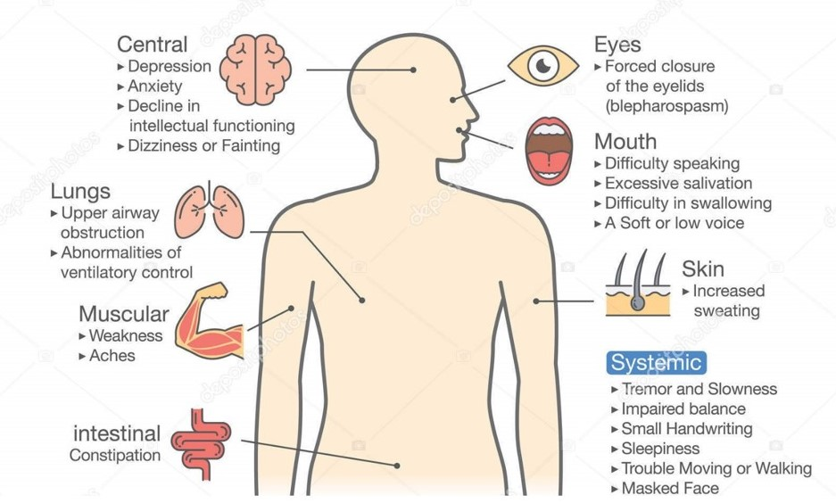
Receiving a timely and accurate diagnosis is paramount for patients because access to treatments could improve their quality of life [10]. So far, the traditional methods of diagnosing PD are based on subjective clinical assessments of patient's symptoms. However, research has shown that around 25% of this diagnosis are incorrect when compared to the results of post-mortem autopsy [9]. These diagnoses are difficult because there are other diseases that may appear similar to PD and symptom severity may fluctuate over time [9]. Adding to that, patients In this project, we explore the possibility of using smartPhone data collected by SageBionetworks, and made public under the umbrella of mPower study, to diagnose people with PD [2]. Such an approach frees the diagnosis process from sporadic clinical trials and gives one the ability to do it anytime one wants. Also, this lets us explore the possibility of using deep-learning models for diagnosis task, which may improve significantly on the previous results.
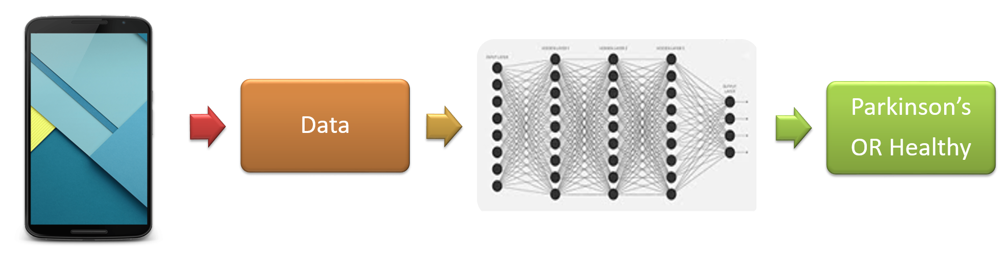
The model that we propose for the detection for the early diagnosis of Parkinson's is to optimize a Deep Learning Model that takes in data from Smartphone (Here we use the data already collected under the mPower study) and makes predictions based on this data input as shown in Figure above.
Literature Review
Parkinson's disease is a neurodegenerative disease that can affect a person's movement, speech, dexterity, and cognition. Physicians primarily diagnose Parkinson's disease by performing a clinical assessment of symptoms. However, misdiagnoses are common. Research has shown that around 25% of these diagnoses are incorrect when compared to the results of post-mortem autopsy [9]. One factor that contributes to misdiagnoses is that the symptoms of Parkinson's disease may not be prominent at the time the clinical assessment is performed [1]. Another problem is the cumbersome process that discourages people from getting a clinical Parkinson's diagnosis, which may lead to worsening of Parkinson's until the point of no recovery. However, if we are able to achieve a good enough performance on our project, we may be able to provide a rough heuristic (if not a complete diagnosis) for people to get themselves professionally checked for PD and that kind of early diagnosis can dramatically improve people's quality of life [9].
We are working on a deep learning approach to distinguish healthy patients from Parkinson's patients using open-source data from mPower study [2]. Machine Learning algorithms have already been applied to diagnose other diseases as well for example, Breast Cancer [8], cardiac risk factors [7], skin cancer [6] and depression [5].
The data we are using consists of four different activities which are walking, tapping, memory and voice [2]. Previous work on this data has achieved very impressive performance, i.e., 0.85 area under characteristic curve (AUC) [1] using all modes of data and only 0.56 AUC using only voice data. This previous work uses expert hand-crafted features [3] which may be limiting the full potential of this data as these features can be suboptimal. Our goal is to implement an end-to-end deep learning algorithm to explore the options for better discrimination between healthy and Parkinson's patients.
System Design
Traditional methods for Parkinson's diagnosis involve a subjective clinical diagnosis. However, through the use of mPower data [2], we intend to augment that process with an easy-to-use predictive Neural Network architecture. We do that by understanding the data provided to us first and then apply Machine Learning techniques with hand-crafted people to generate initial results.
Then we replace those networks with more sophisticated Deep Learning Models and improve upon those results.
After that, we move towards End-to-End Deep Learning which removes all the steps required to prepare features for input to our model.
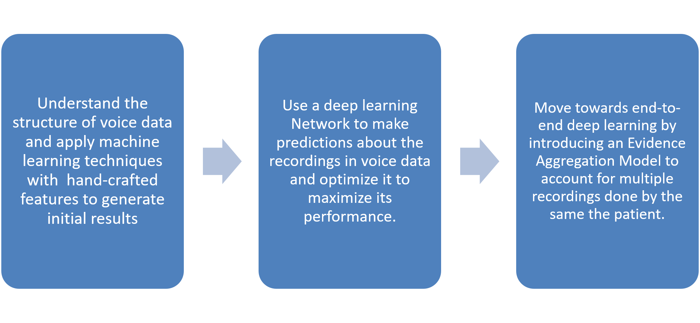
Simulation Setup
We first need to understand the structure of the data, and then we will move onto devising architectures for End-to-End Deep Learning.
Structure of mPower Data
The mPower data [2] is consists of four types of activities: Walking, Voice, Tapping and Memory. Figure below illustrates the structure of mPower data. For our purposes, we limit our attention to Voice data. These four types of activities are specifically designed to trigger Parkinson's symptoms response. Each activity is recorded via the following processes:
- Walking: Subjects walk 10 steps with a phone in their pocket. Phone's Gyroscopic measurements are recorded during the whole activity. This activity is intended to capture irregularities in walking if any.
- Voice: Subjects record 10 seconds of voice into the microphone of their cell-phone. This data is intended to capture the jitter or shimmer in the voice if any.
- Tapping: Subjects tap on two points on the phone repeatedly. The tapping positions and intervals are recorded. This data is intended to record tremor in hand motions if any.
- Memory: Subjects play a guessing game. In this game, the results of pattern matching are recorded. This activity is intended to capture if the memory is in good shape since one of the symptoms of Parkinson's is loss of memory.
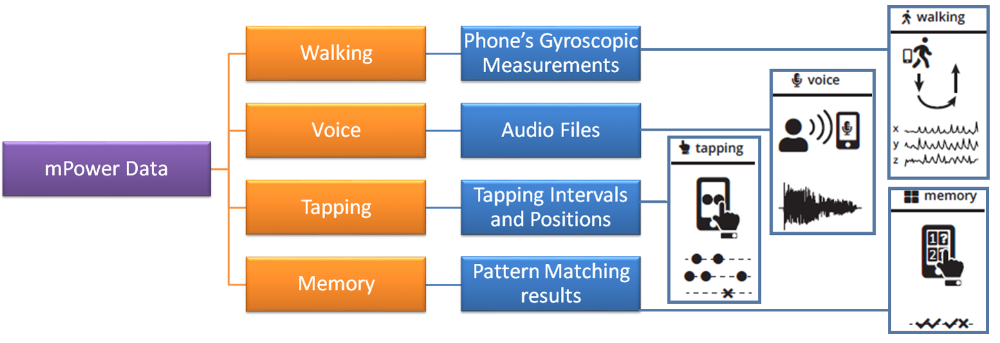
Structure of Voice Data
The voice data contains 65,022 audio files in total which are organized on the basis of the time of their recording as illustrated by Figure below. We ignored the recordings of Parkinson's patients done just after medication, as we believe that those recordings would not provide information about Parkinson's symptoms as Parkinson's medications, suppress these symptoms [1].
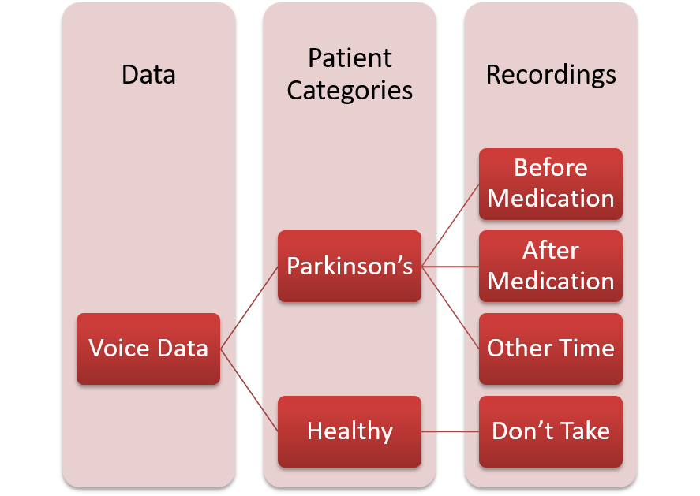
However, the data available to us is imbalanced in terms of the number of people participating in the study. We observe that only 20% of the people are clinically diagnosed by Parkinson's Disease, while an overwhelming 58% of the recordings are attributed to that 20% of the people. This means that on average, people with Parkinson's have recorded more audio files as compared to Healthy people as illustrated in Figure below.
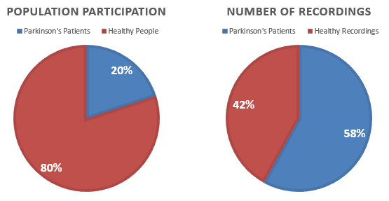
Initial Investigation with Machine Learning Models
Initially, we assumed every recording sample independent of each other and designed a recording-level classifier. The pipeline designed for such a classifier is illustrated in Figure below.
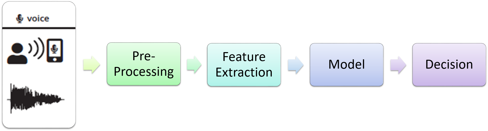
The following features were used for training these classifiers:
- Detrended fluctuation analysis [3]
- Mean Teager-Kaiser energy operator [3]
- Mel-Frequency Cepstal Co-efficients [3]
By training these classifiers, we were able to achieve an Area Under Curve measure of 0.88 as illustrated in Figure below, but our assumptions were wrong are there was high correlation present between two audio-files recorded by the same patient and treating them as independent was misleading.
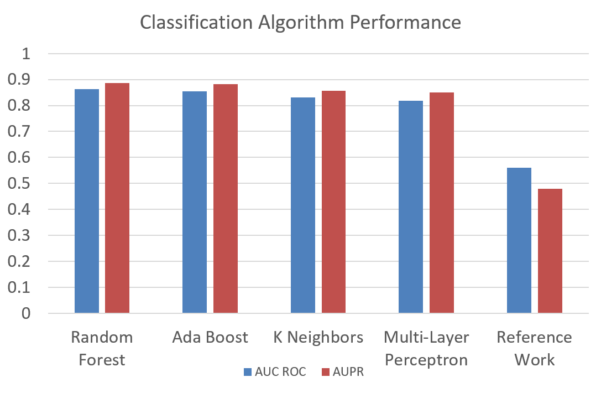
Spline Convolutional Neural Network Architecture
We use a deep neural network architecture [4] to classify the recordings because this architecture was designed to detect and learn features for audible data. The detailed structure for such an architecture is given in Figure below.
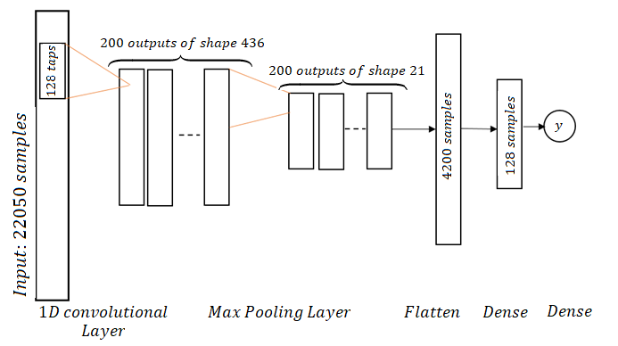
The spline CNNs are a special form of regular CNNs with the change that convolutional filters are initialized as band-limited filters with several center frequencies covering the whole Frequency-space. The CNN is called spline CNN because Hermite-cubic splines are used for filter construction. The filters are constructed by first designing 1 'mother-filter' in Frequency Domain and then shifting it to cover the whole Frequency range. In our case, we use a filter of 100 Hz Bandwidth and shift it with a frequency of ~10 Hz to make 200 band-limited filters. The sampling frequency we use is 2205 Hz. These 200 filters are initialized as convolutional filters in our network and then learned as we train the network. For illustration, two sample filters out of the 200 filters have been shown in Figure below.
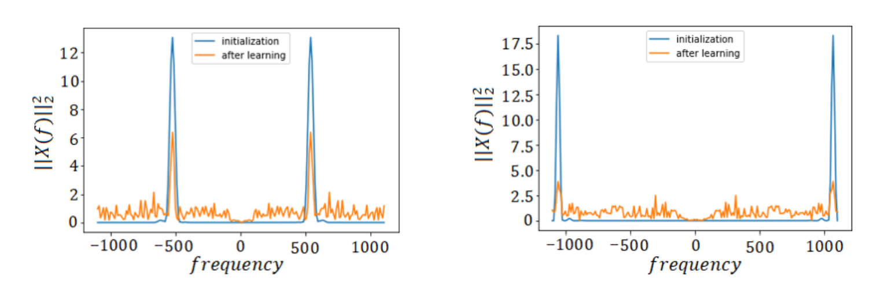
Evidence Aggregation Model (EAM)
We introduced another Deep Learning Model into our pipeline to output a final prediction for each person based upon their predictions from the recording-based classifier. This updates our pipeline to the one shown in Figure below.
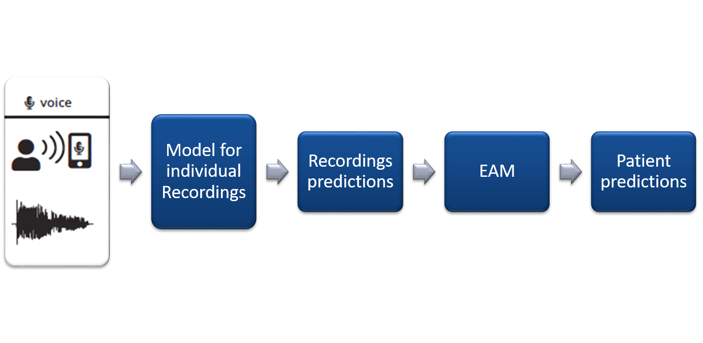
EAM is implemented as a Deep Bi-directional LSTM network, as shown in Figure below. The work of EAM was to aggregate results from more than one models as we move towards other activities as well. However, for this setting, where we are only working with the voice data, the EAM converges to mode function.
Results
We compare our results to the state-of-the-art work on the same dataset by P.Schwab [1] who have used Traditional Machine Learning techniques to classify between Parkinson's patients and Healthy persons.
Results using Random Forest
After the correction of our independence assumption, we were able to improve upon the reported result by using more robust hand-crafted features as shown in Figure below. Using Random Forest with EAM, improved our results to an AUC of 0.76 in comparison of 0.56 obtained by P.Schwab [1] on Voice Data as shown in Figure below.
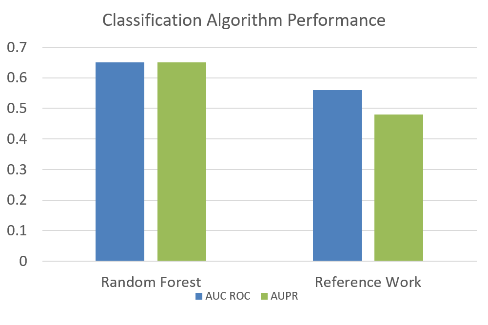
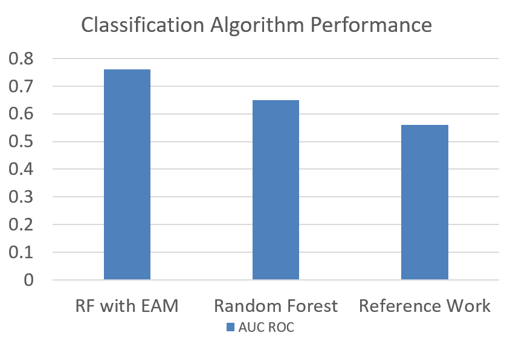
Results using Spline CNN
The next logical step was to replace recording-level with a CNN to skip the pre-processing and feature Extraction step. This improved our measure to an AUC ROC of 0.89 with EAM for 3 recordings per patient as shown in Figure below.
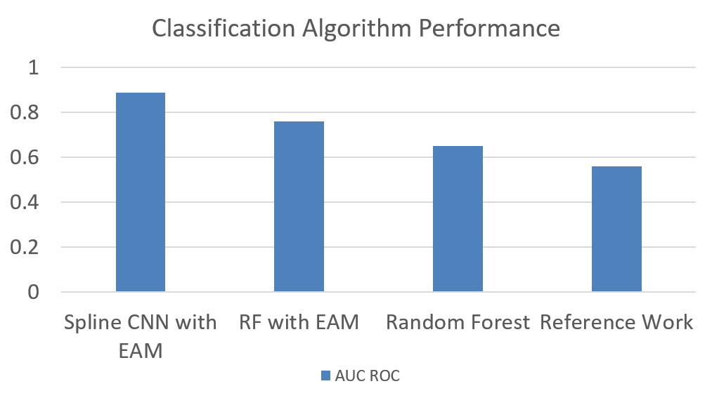
Results Using Different Values of Recordings per Person
The number of recordings per person were also changed and the results were recorded. As we can see that this change does not affect the performance very significantly, yet maximum performance was obtained at 3 recordings per person as shown in Figure below. The data composition was also changed when we changed the number of recordings per person which is illustrated in Figure below.
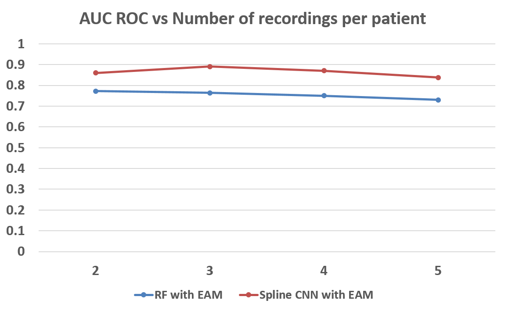
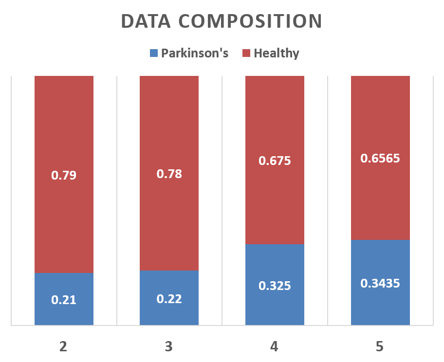
References
- P. Schwab and W. Karlen, "Phonemd: Learning to diagnose parkinson's disease from smartphone data," arXiv preprint arXiv:1810.01485, 2018.
- B. M. Bot, C. Suver, E. C. Neto, M. Kellen, A. Klein, C. Bare, M. Doerr, A. Pratap, J. Wilbanks, E. R. Dorsey et al., "The mpower study, parkinson disease mobile data collected using researchkit," Scientific data, vol. 3, p. 160011, 2016.
- S. Arora, V. Venkataraman, A. Zhan, S. Donohue, K. M. Biglan, E. R. Dorsey, and M. A. Little, "Detecting and monitoring the symptoms of parkinson's disease using smartphones: a pilot study," Parkinsonism & related disorders, vol. 21, no. 6, pp. 650–653, 2015.
- R. Balestriero, R. Cosentino, H. Glotin, and R. Baraniuk, "Spline filters for end-to-end deep learning," in International Conference on Machine Learning, 2018, pp. 373–382
- Y. Suhara, Y. Xu, and A. Pentland, "Deepmood: Forecasting depressed mood based on self-reported histories via recurrent neural networks," in Proceedings of the 26th International Conference on World Wide Web. International World Wide Web Conferences Steering Committee, 2017, pp. 715–724.
|